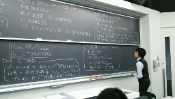
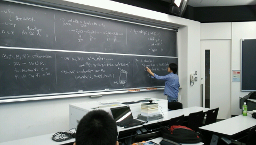
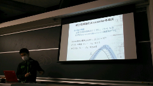

数物セミナー幾何学談話会2014 in 早稲田
この度早稲田大学西早稲田キャンパスにて第一回幾何学談話会を開催します。
今回の談話会では幾何学近傍をテーマとした入門から発展的トピックまで４つの講演が行われます．
また加えて講演者と参加者を交えた交流の時間をお楽しみください．
ポスターセッションは、飛び入りも大歓迎です。印刷したポスターをお持ちください。
| 談話会とは | 過去の談話会 | |
| 数物セミナーでは、各大学の教室などを借りて不定期に談話会を行っています。 談話会とはどのようなものであるのか知りたい方はご覧ください。 | 過去に行われた談話会の講演の詳細および、 一部のUstream配信アーカイブ・講演スライドなどを掲載していますので 参考にしていただければと思います。 | twitterでも談話会の情報を配信しております。 アカウントをお持ちの方はフォローしてみてください。 |
| 数物セミナー公式Twitterアカウント |
日にち・場所
2014年11月8日(土)
早稲田大学 西早稲田キャンパス 54号館101号室
タイムテーブル
| 10:00～ | 開場 |
| 10:40～11:40 | 『幾何学のトイボックス―入門として―』 工藤 勇（慶應義塾大学理工学部物理学科２年） Ustream録画配信 ※終了しました。 |
| 11:40～12:30 | 昼休み |
| 12:30～13:30 | 『多様体のホモロジー』 高橋 光（早稲田大学先進理工学部応用物理学科3年） |
| 13:45～14:45 | 『多様体の微分構造』 山室 孝之（東京理科大学理学部第一部数学科4年） |
| 15:00～16:00 | 『結び目でお金を作ろう』 水上 翔太（早稲田大学先進理工学部応用物理学科3年） 講演スライド(修正版) |
| 16:00～16:10 | 数物セミナー紹介 |
| 16:10～18:00 | ポスターセッション・交流 (ポスター発表希望の方は、ご自分でポスターの用意を お願いいたします。事前連絡は不要です) |
講演アブストラクト
幾何学的な普遍量の一つにホモロジー群というものがあるが、部分空間の和で閉じる空間である単体複体については直感的かつシンプルに定義することができる。一方で必ずしもそうとは限らない空間については特異ホモロジーと呼ばれるホモロジーを構成することになる。多様体についても同様に、特異ホモロジーをそのホモロジーとして採用することになるが、微分多様体についてはドラームコホモロジーと呼ばれる代数が構成されることになる。今回の講演では多様体のホモロジーとこのドラームコホモロジーの関係について解説し、ホモロジーの計算手法などを主に初学者を対象に概説する。
最近の貨幣には高度な偽造防止技術が使用されているにも関わらず、偽札を作ろうとする者は後を絶たない。複製が物理的に困難であるような貨幣を作ることができれば、いたちごっこの現状を変えられるはずである。本公演では、将来的にそのような問題を解決する可能性のある「量子マネー」の理論を紹介する。この理論では結び目理論に登場 する不変量であるAlexander多項式を利用し、貨幣として使用できる量子状態を構成する。量子情報と結び目の理論に関して必要なことは講演中に説明する予定である。
アルバム
|  |  |
{kind=link}
{kind=link}

|
 |
{kind=link}
アクセス
◇東京メトロ副都心線「西早稲田駅」の「早大理工口」直結
◇JR山の手線・西武新宿線・東京メトロ東西線「高田馬場駅」から徒歩15分
Ustream配信について
『多様体の幾何構造』については生配信を，『幾何学のトイボックス』，『結び目でお金を作ろう』については 録画配信を行う予定です．『多様体のホモロジー』についてはUstream配信の予定はありません。